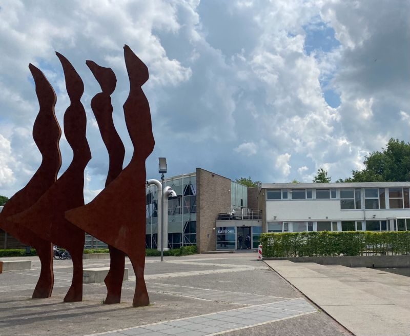

Met school verschillende bedrijven bezocht.
Ik ben met school naar Dairy Campus, Maarsingh & Van Steijn en het CJIB geweest. Het was interessant om te zien hoe verschillend deze organisaties werken en wat je er allemaal kunt leren.